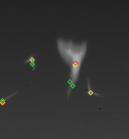
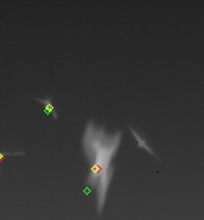

Problem Definition
The goal of this assignment was to learn more about the practical issues that arise when designing a tracking system. The given task was to track animals, namely bats and fish, in video sequences, i.e., identify the same animal from frame to frame. This ability is very important in the field of computer vision since it gives the system a sense of memory and the ability to not only find objects in a given frame but also identify the individuality of a each object and know that it is the same object across frames.
For this assignment, we chose to start-off by implementing the simpler model for tracking the bats in the video. We used the Alpha-Beta Filter, that assumes constant angular velocity undisturbed by noise, to make predictions of the future state of each bat. Using a greedy, sub-optimal method to choose the true state in a region defined by the GATE_SIZE, we then update our state using the pre-defined hyperparameters, APLHA, BETA and DELTA_T.
One of the anticipated difficulties is the choosing the optimal values for the hyperparameters. Since the video contains bats at various distances from the camera, they have different velocities. The bats closer move faster between frames, while bats further away from the camera move slower.
Method and Implementation
Since we were given information of the segmentation and localization, we first read the data for the localization into a nested vector of the dimension (number of frames x number of points in each frame). To store each point we created a custom struct called 'Vertex', that allowed us to create association between points across frames. The struct we defined is as follows:
struct Vertex {
struct Vertex *parent = NULL;
Point position;
Point estimate;
Point truth;
Point velocity;
Scalar color;
};
The Points save information about the current position, the next estimated position and the true estimate position (found by greedy method). This allows us to later plot these for frame and evaluate the performance. The 'parent' pointer allows us to determine where we came from and create an association between points acorss frames. It also allows us to pass along information such as velocity and track color. We also use a structure called 'memory' that is a grid of size (# ROWS x # COLS). This is a pigeon hole sort of structure that allows a Vertex in the current frame to store itself for its successor in the next frame. It serves as a storage unit in between frames. Here is a brief description of the algorithm once the data has been read:
-
We iterate through the points for each frame and use an alpha-beta filter to predict the next position for each of these points given the current position and some initial velocity. The equations used are given below:
xk estimate = xk previous + (DELTA_T * vk_x previous); yk estimate = yk previous + (DELTA_T * vk_y previous); vk_x estimate = vk_x previous; vk_y estimate = vk_y previous; -
We then look for the point (in the next frame) closest to the estimated point (using Euclidean distance). We then use the 'residue' and our hyperparameters to update the state for each bat motion model.
distance = sqrt(pow(abs(a.x - b.x), 2) + pow(abs(a.y - b.y), 2)); xk += (ALPHA * rk_x); yk += (ALPHA * rk_y); vk_x += (BETA * rk_x) / DELTA_T; vk_y += (BETA * rk_y) / DELTA_T; - Every Vertex stores itself in the memory structure for the next point. The location is indexed using the x and y coordinates of the next point. This structure allows storing and lookups in O(1) constant time, increasing the efficiency of the algorithm and avoids the implementation of complicate search methods.
The hyper parameters for bats we used were:
- DELTA_T = 0.1
- ALPHA = 0.85
- BETA = 0.05
- GATE_SIZE = 50
The hyper parameters for fishes we used were:
- DELTA_T = 0.4
- ALPHA = 0.85
- BETA = 0.05
- GATE_SIZE = 75
Given below are brief descriptions for the functions used:
/*
* Function: InitializeVelocityMemory
* --------------------
* initializes the 2D array where each Point whose coordinates are assigned the value of V_INIT
*
* parameters: N/A
*
* returns: N/A
*/
void InitializeVelocityMemory();
/*
* Function: ReadData
* --------------------
* reads the localization data of the bats from a text file and stores it in a nested structure
*
* parameters:
* - measurements -> a nested structure that stores the centroids
* for each bat for every frame in the dataset.
*
* returns: N/A
*/
/*
* Function: runfish
* --------------------
* reads the localization data of the bats from a text file and stores it in a nested structure
*
* parameters: N/A
*
* returns: cent(centroid)
*/
void ReadData(vector >& measurements);
/*
* Function: AlphaBetaFilter
* --------------------
* uses an alpha-beta filter to predict the position in the next frame of a datapoint in the current frame
*
* parameters:
* - measurements -> a nested structure that stores the centroids
* for each bat for every frame in the dataset.
*
* returns: N/A
*/
void AlphaBetaFilter(vector >& measurements);
/*
* Function: FindClosestPoint
* --------------------
* finds the point closest to the given point in the given region of interest
*
* parameters:
* - points -> a structure that holds the points available in the given area
*
* returns: closest point
*/
Point FindClosestPoint(vector points, Point point);
/*
* Function: EuclideanDistance
* --------------------
* finds the euclidean distance between 2 points
*
* parameters:
* - a -> the point in the first frame
* - b -> the point in the second frame
*
* returns: the euclidean distance between the 2 points a and b
*/
double EuclideanDistance(Point a, Point b);
Experiments
Describe your experiments, including the number of tests that you performed, and the relevant parameter values.
Define your evaluation metrics, e.g., detection rates, accuracy, running time.
Results
The images below show our tracking algorithm successfully correcting its predictions over frames.
Portion Where Method Works | |||||
| Frame a | Frame b | ||||
| Frame c | Frame d | ||||
| Frame e | Frame f | ||||
The above images show that our algorithm works well in tracking some of the points. However it fails to work in some cases.
The images below show a scenario where our tracking algorithm fails.
Portion Where Method Fails | |||||
| Frame a | Frame b | ||||
|  | |||||
| Frame c | Frame d | ||||
|  | |||||
Discussion
Discuss your method and results:
- What are the strengths and weaknesses of your method?
- Do your results show that your method is generally successful or are there limitations? Describe what you expected to find in your experiments, and how that differed or was confirmed by your results.
- Potential future work. How could your method be improved? What would you try (if you had more time) to overcome the failures/limitations of your work?
The alpha-beta filter, although less robust, provides pretty good estimates for the states and performs acceptable tracking for the bats in the video. The advantage ofcourse is the much simpler implementation. However, the Kalman filter might provide slightly better estimates since it takes into consideration the uncertainty in the system.
Improvements to our method would include combining Multiple Hypothesis Tracking with a more advanced filter such as the Kalman filter.
Conclusions
Based on your discussion, what are your conclusions? What is your main message?
Credits and Bibliography
Cite any papers or other references you consulted while developing your solution. Citations to papers should include the authors, the year of publication, the title of the work, and the publication information (e.g., book name and publisher; conference proceedings and location; journal name, volume and pages; technical report and institution).
Material on the web should include the url and date of access.
Credit any joint work or discussions with your classmates.